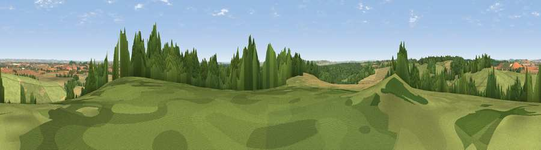

Horseshoe Hill
#12735 in England · top 6% of its area beats it · near BroughtonThe view, rendered

A 360° render of this exact spot computed from the terrain model, tree cover and land cover — summer colours, afternoon light, calibrated against photographs of famous viewpoints. Real trees, hedges and buildings will differ in detail.
The panorama
Grey silhouette: terrain skyline in each direction (720 bearings, Earth curvature and refraction included). Dashed green: skyline with trees (+15 m) and buildings (+8 m) as obstacles. Blue strip: how far the ground is visible on each bearing.
Where the view opens
Wedge length = distance to the farthest visible ground on that bearing (vegetation-aware). Rings at 10, 25 and 50 km.
What fills the view
46% grassland · 34% cropland · 20% woodland ·
Angular shares of the visible panorama (visual magnitude), not map area. Landscape diversity 0.47 (0–1 Shannon).
Key numbers
More beautiful places nearby
The staircase of upgrades: each row has a higher view potential than everything closer. Driving times are estimates from straight-line distance, calibrated against real road routing — check an actual route before setting out.
| Place | Direction | Drive | Score |
|---|---|---|---|
| Kent's Wood | NW · 1 km | ~2 min | 60.9 |
| Viewpoint near Grateley | N · 9 km | ~18 min | 61.1 |
| Viewpoint near Stockbridge | E · 10 km | ~20 min | 64.3 |
| Viewpoint near Bulford | NW · 12 km | ~23 min | 70.3 |
| Beacon Hill | NE · 30 km | ~47 min | 76.7 |
| Martinsell viewpoint | NNW · 32 km | ~49 min | 77.3 |
| Viewpoint near Berwick St John | WSW · 37 km | ~56 min | 78.2 |
| Viewpoint near Buriton | ESE · 46 km | ~66 min | 80.0 |
51.10058, -1.60504 · source: dobih hill · position refined by local search. Computed location — check access rights before visiting.